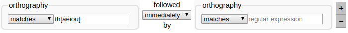

3 - Searching
Now that you have some transcripts in your database, we'll try out LaBB-CAT's search functions a little.
Searching broadly involves the following steps:
- Selecting participants whose utterances you want to search,
- Specifying one or more patterns to search for, and
- Exploring or extracting the search results.
We'll start with a very simple search - all the instances of the word "the" uttered by monolingual English-speaking males.
- In LaBB-CAT, click on the participant link on the menu.
This takes you to a page listing all participants, where you can filter participants by their attributes. You can see various participant attributes listed across the top of page. - We're interested in male participants, so under the Gender, select M.
After a short delay the page will display a list of all the male participants in the database. - We want the participants who speak only English, so enter
Englishunder Languages Spoken
The page will then display a list of male participants who include English in their languages. It also includes participants who speak other languages, who we want to eliminate.
The Languages filter box accepts a ‘regular expression’ so if we enter^English$in the box, only those with English as their sole language will be listed. This is because, in regular expressions, ^ means “the beginning” and $ means “the end”, so ^English$ means, “English at the beginning, and at the end” - Click Layered Search at the top.
You will see the participants you selected listed at the top, above a list of annotation layers. Below that, there's a “Search Matrix”, although it doesn't look much like a matrix yet, because it's only one layer high and one word wide… - In the box next to the word “orthography” type the word
the
- Now click the Search button at the bottom (or hit <Enter>).
A progress bar will appear, and then shortly after that, a new tab will open, which has a list of search results in it. Your browser's popup-blocker might prevent the results page from opening - you can fix that either by allowing the popups in your browser, or by clicking the Display results link that appears after the search finishes. - Each match is highlighted and shown with some context (the previous word and the following word in the transcript). The amount of context is controlled by a drop-down list at the top.
Select 5 words to see more context around each match. - Click on the first match.
You will see that the interactive transcript page opens in a new browser tab, with the match at the top, and highlighted. You will also see that all the other matches from the same transcript are also highlighted. - We've already seen what can be done in the interactive transcript page, so close the tab to return to the results page.
- Each result line has a ticked checkbox next to it. Scroll to the bottom of the list.
You'll see that there are buttons at the bottom, which perform operations on the ticked results, including CSV Export, Utterance Export, and Audio Export. - Un-tick the “Select all results” checkbox, and then tick a handful of results in the list.
Tip: You can select a group of matches by ticking the first one, and then holding down the <Shift> key while ticking the last one. - Click the Audio Export button.
- Save and open the resulting zip file.
You'll see that the files are systematically named to include:- the name of the transcript
- the start and end time of the extracted utterance
- Now go back to the results page and tick the Prefix Names checkbox.
- Click the Audio Export button again.
- Save and open the resulting zip file.
This time you'll see that the files are also prefixed by the result number.
You may notice that there are more audio files this time; that's because there were multiple results in the same utterance. Previously, only one copy of the utterance was exported, but this time, each match has its own copy of the utterance audio, prefixed by the result number. - Now go back to the results page and un-tick the Prefix Names checkbox.
- Click the Utterance Export button.
- Save and open the resulting zip file.
You'll see that the TextGrid names match the audio file names in the first zip file. - Open one of the TextGrids in Praat.
You'll see that the TextGrid includes a tier named target… which indicates which token(s) in the word… tier matched the search pattern. - Back on the results page, click the CSV Export button.
- Save the resulting file, and open it.
You may have to specify some import options, in which case it may be handy to know that the field separator is comma, and the fields are quoted by speech marks.
Tip: If you're using Microsoft Excel and you find it doesn't open all the columns correctly:- Create a new workbook in Excel.
- Click the 'Data' tab.
- On the "Get External Data" ribbon click 'From Text'.
- Select the CSV file you downloaded.
- Select 'Delimited' and click Next.
- Ensure 'Comma' is the only delimiter ticked and click Next.
- Click Finish and then OK.
You will see a spreadsheet with one line per selected result, and various columns containing information about the speaker, the corpus, the match line and word, and a URL to the interactive transcript for the match.
With this spreadsheet, you can work 'offline' with the results, tagging them, computing statistics in Excel, R, or any other program that can work with CSV files. We'll look at a few more uses for the CSV results files later…
- Close the CSV file, and the results page, and go back to the search matrix page.
We've seen that you can search for exact word matches, but you can also search for patterns, using 'regular expressions'. Now we're going to search for words beginning with “the...”
- Change the orthography search text to
the.*(i.e. after the word "the", append a full-stop and an asterisk.
The full-stop means “any character at all”, and the asterisk means “zero or more of the previous thing”, so .* means "zero or more characters". - Click Search.
You will see that now the search results include the word "the" and also words like "then", "there", "they", etc. - Now go back to the search page, and change the asterisk to a plus-sign, which means “one or more of the previous thing”

- Click Search
You will see that now the search results exclude the word "the", only including words where the initial "the..." is followed by at least one character. - Now change your search by replacing the e in "the" with [aeiou] - so your search pattern will be:
th[aeiou].+
The square-brackets mean “any one of the things inside the brackets”, so [aeiou] means “any vowel”.
Tip: while you are typing the regular expression, you may notice that the text goes red; this means that what's currently in the box is not a valid regular expression. That's fine while you're still typing, but when you're ready to search, if the text is red, the search will likely fail. If the regular expression text is red, you can see what the problem with it is by hovering your mouse over the red text; a ‘tip’ will appear showing an error message.
- Click Search.
You will now see that the results include words like "think", "that", "thought", etc. You can get more information about regular expressions by using the online help on the search page, and also by clicking the the regular expressions link above the search matrix.
You can get more information about regular expressions by using the online help on the search page, and also by clicking the the regular expressions link above the search matrix.
Up until now, we've only been matching against one word at a time. Now we're going to include patterns for a chain of words…
- On the search page, to the right of the search matrix, there's a + button. Click it.

Now you will see that our search matrix is one layer high by two words wide. - Change the entries on the orthography layer so that it will match the word "the" followed immediately by a word that starts with a vowel, and click Search.
Check the search results are giving you what you expected. - Now search for "the" followed, within two words, by a word that starts with a vowel.
- Dream up some other searches that interest you, and try out other options on the search page.
If in doubt about a search option, try the online help page.